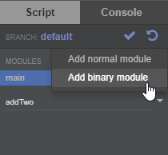
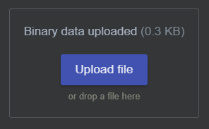
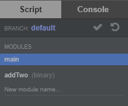

我们引入了 Node.js 的 require 和 module.exports 以方便玩家归纳整理代码。举例来说，玩家可以创造一个“侦察兵”模块：
module.exports = {
run(creep) {
creep.moveTo(...);
}
}然后将“侦察兵”模块导入主模块：
var scout = require('scout');
for(var i in Game.creeps) {
scout.run(Game.creeps[i]);
}除了亲自编写的模块，玩家还可以借用其他人的模块。目前我们内置了 lodash 库。
var _ = require('lodash'); // 译注：由版本更新，此行现可省略
var harvesters = _.filter(Game.creeps, {
memory: {role: 'harvester'}
});二进制模块
除了上述的普通模块，玩家还可以二进制模块。其会在玩家调用 require 时以原始二进制形式加载，由此允许玩家运行用其他语言（比如 WebAssembly ）编写的代码。
WebAssembly 是个二进制编译的代码格式。其可以快速高效的运行 C/C++ 或 Rust 代码（及其他支持的语言）。参阅 WebAssembly 文档以获取更多信息。
以下简述了如何用 Emscripten 编译 C/C++ 代码及如何上传编译后的文件到游戏里。
创建 .wasm 文件
省略此步如果您想上传的文件已经是
.wasm格式。
安装 Emsripten SDK。
编写你的 C 函数并保存为 addTwo.c
int addTwo(int a, int b) {
return a + b;
}将其编译成 addTwo.wasm：
emcc -s WASM=1 -s SIDE_MODULE=1 -O3 addTwo.c -o addTwo.wasm上传二进制模块
点击此按钮添加新的二进制模组 addTwo：

以二进制模组的形式上传 addTwo.wasm：
Upload your addTwo.wasm file as binary module contents, so that it looks as follows:

点击 ✔️ 提交代码。 Click the ✔️ button to commit your modules.
在 Screeps 使用二进制模块
如果您正确上传了你的二进制模块，您应该能在游戏内置 IDE 看见下图：

现在可通过 WebAssembly API 将二进制代码导入您的 main
// 这将返回带有 `addTwo.wasm` 二进制内容的 ArrayBuffer
const bytecode = require('addTwo');
const wasmModule = new WebAssembly.Module(bytecode);
const imports = {};
//有关 Emscripten 允许环境，请参见:
// https://github.com/WebAssembly/tool-conventions/blob/master/DynamicLinking.md
imports.env = {
memoryBase: 0,
tableBase: 0,
memory: new WebAssembly.Memory({ initial: 256 }),
table: new WebAssembly.Table({ initial: 0, element: 'anyfunc' })
};
const wasmInstance = new WebAssembly.Instance(wasmModule, imports);
console.log(wasmInstance.exports.addTwo(2,3));